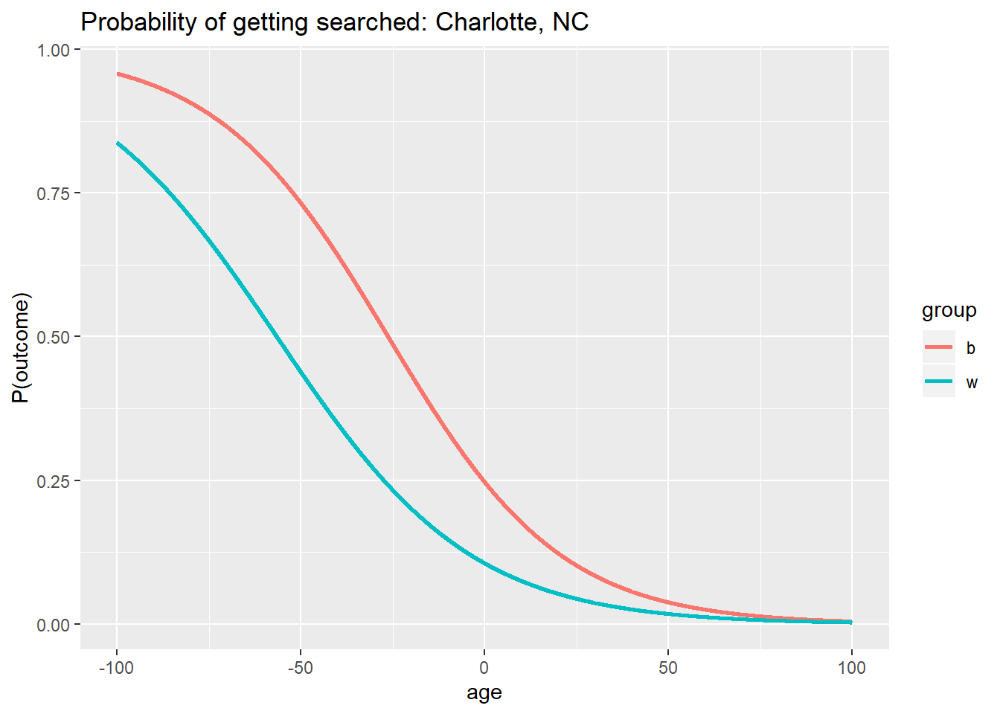
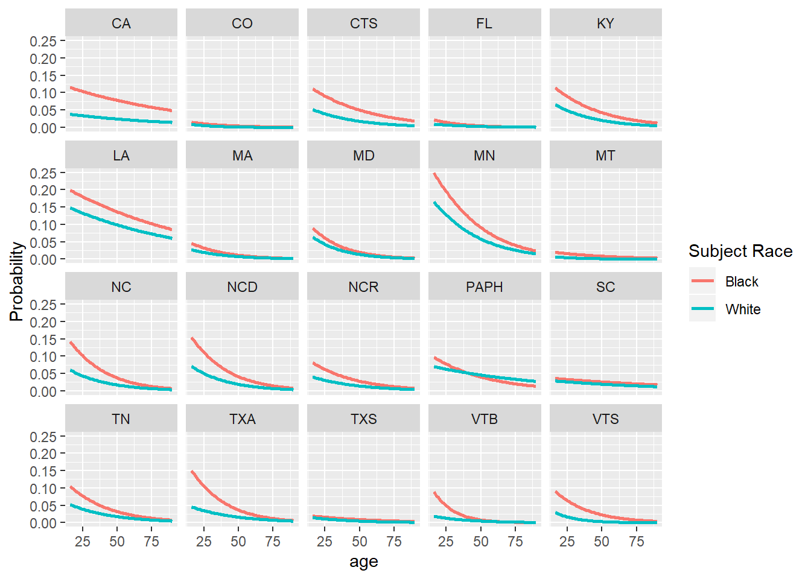
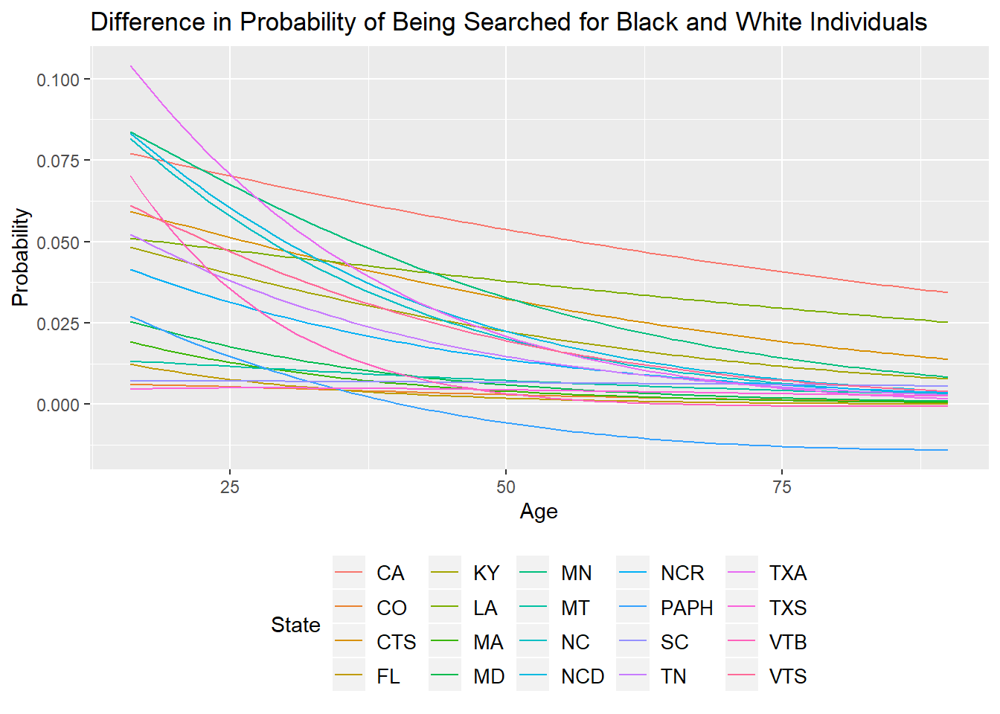

Chapter 6 Nationwide Logistic Regression
6.1 Logistic Regression
Logistic regression models are commonly used for modeling the probability of an event that only takes two possible outcomes. The dependent variable should be binary, and the output parameters of the model should indicate how strongly will the independent variables affect the likelihood of the occurrence of the event. For the policing data, it would be of great interest to investigate how would race and age of drivers contribute to the likelihood of drivers being searched. The reason for choosing to inspect the likelihood of searches rather than stops is that, during night times, there indeed exists the concern that when the police made the stop, he or she might not know the driver’s identity. However, if the police are deciding between whether to search or not, he or she should have already approached the car and have a basic understanding of the driver’s race and age. It is also worthwhile to construct a logistic model that will present a visualization of how the likelihood of getting searched changes through time as well as the comparison between drivers with different racial identity.
The policing data used for the regression analysis was collected from Charlotte, North Carolina with a time range from January, 2000 to October 2015. The binary dependent variable is “search”, which denotes whether the police have conducted a search. The key independent variables are the race and age of the driver. To better observe the effect of one race relative to the other and to eliminate possible confusions with omitted categories of variables, the data was limited to only include black and white drivers.
Based on the notion of only two categorical group in the “search” variable, the logistic model in predicting the search probability is presented below. \(age_i\) is a numeric variable that denotes the age of the driver and \(race_i\) is a categorical variable that assigns value “1” to white drivers and “0” to black drivers. Inspecting each equation with respect to the race variable allows an interpretation of the parameters. The equation for \(y_{white}\) differs from \(y_{black}\) by a value of \(\beta_2 + \beta_3 race_i\)
\[\begin{align*} y_i &= \beta_0 + \beta_1 age_i + \beta_2 race_i + \beta_3 age_i*race_i \\ y_{white} &= \beta_0 + (\beta_1 + \beta_3) age_i + \beta_2 race_i \\ y_{black} &= \beta_0 + \beta_1 age \end{align*}\]
Observing the output of the given model, \(\beta_2\) and \(\beta_3\) each has a value of -1.0199 and 0.00469, respectively. A negative \(\beta_2\) indicates that during younger ages, white drivers might be less likely to be searched relative to black drivers. However, as drivers age, a positive \(\beta_3\) indicates that the probability gap of getting searched between black and white drivers have shortened.
##
## Call:
## glm(formula = search ~ as.numeric(subject_age) * as.factor(subject_race),
## family = "binomial", data = NCC2)
##
## Deviance Residuals:
## Min 1Q Median 3Q Max
## -0.6231 -0.4102 -0.3109 -0.2394 3.2771
##
## Coefficients:
## Estimate Std. Error
## (Intercept) -1.1158593 0.0138524
## as.numeric(subject_age) -0.0424910 0.0004429
## as.factor(subject_race)white -1.0206028 0.0261268
## as.numeric(subject_age):as.factor(subject_race)white 0.0047084 0.0008116
## z value Pr(>|z|)
## (Intercept) -80.554 < 2e-16 ***
## as.numeric(subject_age) -95.941 < 2e-16 ***
## as.factor(subject_race)white -39.063 < 2e-16 ***
## as.numeric(subject_age):as.factor(subject_race)white 5.802 6.57e-09 ***
## ---
## Signif. codes: 0 '***' 0.001 '**' 0.01 '*' 0.05 '.' 0.1 ' ' 1
##
## (Dispersion parameter for binomial family taken to be 1)
##
## Null deviance: 620366 on 1382621 degrees of freedom
## Residual deviance: 592472 on 1382618 degrees of freedom
## (4 observations deleted due to missingness)
## AIC: 592480
##
## Number of Fisher Scoring iterations: 6## age group prob
## 1 -100.00 b 0.9582433
## 2 -99.99 b 0.9582263
## 3 -99.98 b 0.9582092
## 4 -99.97 b 0.9581922
## 5 -99.96 b 0.9581752
## 6 -99.95 b 0.9581582
\[\begin{align*} Pr(search_i=1|black_i) &= {\frac{exp(\beta_0 + \beta_1 age_i)}{1 + exp (\beta_0 + \beta_1 age_i)}} \\ Pr(search_i=1|white_i) &= {\frac{exp(\beta_0 + (\beta_1 + \beta_3)age_i + \beta_2)}{1 + exp (\beta_0 + (\beta_1 + \beta_3)age_i + \beta_2)}} \end{align*}\]
This plot shows the distribution of probabilities of being searched with the parameters of the logistic model. The horizontal axis represents the driver’s age and the vertical axis represents his or her likelihood of being searched. Two lines each represent the distribution for black and white drivers, and they are generated with equations stated above. It can be observed from this plot that when drivers are much younger (less than 35 years old), black drivers have a higher chance of being searched. When age increases, likelihood of being searched decreases for both groups of drivers. For Black drivers, the search probability seems to decrease at a higher rate relative to that of the white driver group. As the driver’s age increases to over approximately 50 years old, the two probabilities of getting searched seem to be relatively close to each other. One possible interpretation of this plot is that for the region of Charlotte, age does affect a driver’s likelihood of being searched, and additionally, the increase in the age of black driver has lowered his or her chance of being searched more so than that of the white drivers.
6.2 Plotting S-curves
library(ggplot2)
library(forcats)
library(XML)
library(RMySQL)
library(tidyverse)
library(rlist)
library(lubridate)
library(caret)
library(rpart.plot)
library(gridExtra)First let’s get the datasets that have our variables of interest
all_dataset_names <-as.list(DBI::dbGetQuery(con, "SHOW TABLES"))$Tables_in_traffic
#all_dataset_names
variables_of_interest <- c("subject_age", "subject_race", "subject_sex", "date", "search_conducted")
datasets_of_interest <- relevant_datasets(all_dataset_names, variables_of_interest)
datasets_of_interest <- datasets_of_interest[-c(1, 3, 14, 21)]This section walks through the process of plotting nationwide s-curves. The next step for plotting multiple cities is querying the data from our datasets of interest.
I then plotted both curves (black and white individuals) for each dataset. I do so by computing the probabilities \(Pr(search_i=1|black_i)\) and \(Pr(search_i=1|white_i)\). I use the values from the coefficient matrix to calculate the \({\beta_0 + \beta_1 age_i}\) coefficient for the black population and the \({\beta_0 + (\beta_1 + \beta_3)age_i + \beta_2}\) coefficient for the white population. The probabilities are then easily computed using the equation \[{\frac{exp(coefficient)}{1 + exp (coefficient)}}\] for each population. More information on these probabilities can be found in the previous section.
I removed the datasets from Pittsburg and Connecticut because the Pittsburg dataset seemed to have flipped search conducted data points (TRUE values were most likely actually FALSE values). I am more confident of this flaw given it was also stated in the Pierson et al. (2020) that this Pittsburg dataset may be corrupt. The Connecticut dataset was also removed after looking at the actual plotted probabilities for each age—there was extremely high variance and no trend, suggesting that the logistic regression model would not demonstrate any signal.
coeff_matrix <- read.csv("coeff_matrix_raw.csv")
#function that uses our coefficient matrix to compute probabilities for the various datasets
national_plot <- function(num){
matrix <- coeff_matrix[num,]
ages <- seq(16,90,1) # chosing an appropriate age range
coeff_b <- (matrix$intercept) + (matrix$subject_age)*ages # calculating coefficients
coeff_w <- ((matrix$intercept) + (matrix$subject_race)) +
(matrix$subject_age + matrix$subject_age.subject_race)*ages
scurve_b <- exp(coeff_b)/(1+exp(coeff_b)) #computing probability curve from respective calculated coefficient
scurve_w <- exp(coeff_w)/(1+exp(coeff_w))
plot_b <- data.frame(prob=scurve_b, age=ages, state = matrix$state_abbreviation, race = "black")
plot_w <- data.frame(prob=scurve_w, age=ages, state = matrix$state_abbreviation, race = "white")
plot_data <- bind_rows(plot_b,plot_w)}
combine_plots <- lapply(seq(datasets_of_interest), national_plot)
cities <- do.call("rbind", combine_plots)
#removed Pittsburg and Connecticut statewide datasets
data_b <- cities %>% filter(race=="black") %>% filter(state != "PAPI") %>% filter(state != "CTH")
data_w <- cities %>% filter(race=="white") %>% filter(state != "PAPI") %>% filter(state != "CTH")
#plotting the data
ggplot() + geom_line(aes(x=age,y=prob, color="Black"), data=data_b, lwd=1) +
geom_line(aes(x=age,y=prob, color="White"), data=data_w, lwd=1) +
labs(x="age", y="Probability", color = "Subject Race") +
facet_wrap(~state) The nationwide graphs indicate that for both races, the probability of being searched decreases as age increase. Another observation is that black individuals have a higher probability of being searched for all ages in all except Philadelphia.
I then plotted the separation between s-curves to visualize the difference in probabilities for black and white individuals. I did so by subtracting the s-curves generated by both coefficients (s-curve for black individuals - s-curve for black individuals).
my_plot <- ggplot()
#filtering out Pittsburg and Connecticut
coeff_matrix <- coeff_matrix %>% filter(state_abbreviation != "PAPI") %>% filter(state_abbreviation != "CTH")
#creating a singular plot for all datasets
for (num in 1:20){
matrix <- coeff_matrix[num,]
ages <- seq(16,90,1)
coeff <- (matrix$intercept) + (matrix$subject_age)*ages
coeff2 <- ((matrix$intercept) + (matrix$subject_race)) + (matrix$subject_age + matrix$subject_age.subject_race)*ages
scurve1 <- exp(coeff)/(1+exp(coeff))
scurve2 <- exp(coeff2)/(1+exp(coeff2))
scurve <- scurve1 - scurve2 #calculation of the difference in probability
plot <- data.frame(Probability=scurve, Age=ages, State = matrix$state_abbreviation)
my_plot <- my_plot + geom_line(plot, mapping = aes(x=Age, y=Probability, color=State))}
my_plot + theme(legend.text = element_text(size = 10), legend.position = "bottom") +
ggtitle("Difference in Probability of Being Searched for Black and White Individuals") This plot further demonstrates that the probability of being searched for black individuals is higher than white individuals for every age, with all curves except Philadelphia being entirely positive. The model also indicates that the difference in probabilities goes down as the individual’s age increases.
This plot further demonstrates that the probability of being searched for black individuals is higher than white individuals for every age, with all curves except Philadelphia being entirely positive. The model also indicates that the difference in probabilities goes down as the individual’s age increases.
The significance of the unique result from Philadelphia was not studied, but it is important to note that Philadelphia is in the same state as Pittsburg (the corrupt dataset), so there is a possibility of systematic issues influencing all datasets in the state.
6.2.1 Grouping
After recognizing the difference in probabilities for black and white individuals, I became interested in what kind of characteristics of the state or city may influence the magnitude of this difference. I performed this priliminary investigation by simply hardcoding various factors about the state or city into the coefficient matrix. The first variable I used was how the state voted in the 2016 election.
my_plot <- ggplot()
for (num in 1:20){
matrix <- coeff_matrix[num,]
ages <- seq(16,90,1)
coeff <- (matrix$intercept) + (matrix$subject_age)*ages
coeff2 <- ((matrix$intercept) + (matrix$subject_race)) +
(matrix$subject_age + matrix$subject_age.subject_race)*ages
scurve1 <- exp(coeff)/(1+exp(coeff))
scurve2 <- exp(coeff2)/(1+exp(coeff2))
scurve <- scurve1 - scurve2
plot <- data.frame(Probability=scurve, Age=ages,
State = matrix$state_abbreviation, makeup = matrix$state_politics)
my_plot <- my_plot + geom_line(plot, mapping = aes(x=Age, y=Probability, color=makeup))}
my_plot + scale_color_manual(values = c("blue", "red")) +
theme(legend.text = element_text(size = 10)) +
ggtitle("Subtracted S-curves by Blue or Red State") There is no apparant trend in this graph, suggesting that the magnitude of difference may not be influenced by state politics.
I then continued to look at other variables. I was primarily interested in forms of diversity and used the ranking found at https://wallethub.com/edu/most-least-diverse-states-in-america/38262/#methodology as a measurement. Each state was given a rank out of 50, so I grouped the subtracted s-curves on a sliding scale based on these ranks. I hardcoded these characteristics into the coefficient matrix and plotted for all forms of diversity on the website. The plot for racial and ethnic diversity is shown here.
my_plot <- ggplot()
for (num in 1:20){
matrix <- coeff_matrix[num,]
ages <- seq(16,90,1)
coeff <- (matrix$intercept) + (matrix$subject_age)*ages
coeff2 <- ((matrix$intercept) + (matrix$subject_race)) +
(matrix$subject_age + matrix$subject_age.subject_race)*ages
scurve1 <- exp(coeff)/(1+exp(coeff))
scurve2 <- exp(coeff2)/(1+exp(coeff2))
scurve <- scurve1 - scurve2
plot <- data.frame(Probability=scurve, Age=ages,
State = matrix$state_abbreviation, makeup = matrix$state_politics,
diversity = matrix$racial_and_ethnic)
my_plot <- my_plot + geom_line(plot, mapping = aes(x=Age, y=Probability, color=diversity))}
my_plot + scale_color_gradient(low = "yellow", high = "red") +
theme(legend.text = element_text(size = 10)) +
ggtitle("Subtracted S-curves by Racial and Ethnic Diversity Rankings") None of the variables presented any observable trend in the subtracted s-curves. However, note that this was only a simple priliminary analysis using one source for diversity ranking. In other words, this is by no means a complete study of these variables of diversity, so further work is encouraged to further study these variables as well as others.
None of the variables presented any observable trend in the subtracted s-curves. However, note that this was only a simple priliminary analysis using one source for diversity ranking. In other words, this is by no means a complete study of these variables of diversity, so further work is encouraged to further study these variables as well as others.
6.3 Veil of Darkness Nationwide
Running a veil of darkness logistic regression follows a similar process as using race and age as variables to predict a search being conducted. This time, we add a light binary variable
First we want to get the relevant datasets. This time, we splice out different datasets as those are empty Here we apply the relevant_datasets function to get the character string. Then, we can use base R splicing to remove empty datasets.
This code block defines the function, query_data, which calls the SQL command to retrieve the datasets with their speficied variables. Lastly, it will append each dataset to a list called datasets.
At last, the previous four functions will be called in the clean_data function. Clean_data does two main things: 1) make search conducted into a binary datatype 2) add night and day variables to our dataset Notice how this is very similar to the previous clean_data function only this time we add a add_night_day function
clean_data <- function(i){
city_dataset <- datasets[[i]] %>% drop_na()
# first add light and day variables
tmp_lat <- coordinates[[i]][1]
tmp_long <- coordinates[[i]][2]
time_zone <- lutz::tz_lookup_coords(tmp_lat, tmp_long, warn = F)
city_dataset <- add_night_day(city_dataset, time_zone, tmp_lat, tmp_long)
# clean data
if (typeof(city_dataset$search_conducted) == "character"){
city_dataset <- city_dataset %>%
filter(subject_race == "black" | subject_race == "white") %>%
mutate(search_conducted = case_when(search_conducted == "TRUE" ~ 1,
search_conducted == "FALSE" ~ 0))
} else {
# some datasets have search_conducted as already a dbl
city_dataset <- city_dataset %>%
filter(subject_race == "black" | subject_race == "white") %>%
mutate(search_conducted = search_conducted)
}
city_dataset <- city_dataset %>%
mutate(subject_race = as.factor(case_when(subject_race == "white"~"W", subject_race=="black"~"B")))
return(city_dataset)
}
datasets <- lapply(seq(datasets), clean_data)fix_ages quickly sets any ages to a dbl data type
fix_ages <- function(city_dataset){
city_dataset <- city_dataset %>% mutate(subject_age = as.numeric(subject_age))
return(city_dataset)
}
datasets<- lapply(datasets, fix_ages)Since we are analyzing multiple outputs from a logistic regression, we need a way to store those outputs. We decided to takes the coefficients from each logistic regression and make a dataframe out of them.
coefficient_matrix <- data.frame("intercept" = numeric(), "subject_raceW" = as.numeric(), "subject_age" = as.numeric(), "is_darkTRUE" = as.numeric(), "subject_raceW:subject_age" = as.numeric(), "dataset_name" = character())
mapply(logistic_regression, datasets, datasets_of_interest)
# fitlog <- glm(formula = search_conducted ~ subject_race*subject_age+is_dark, data = datasets[[1]], family = binomial, control = list(maxit = 50))
# summary(fitlog)
colnames(coefficient_matrix) <- c("intercept", "subject_raceW", "subject_age", "is_dark", "subject_raceW.subject_age", "datasetnames")Now that we have the coefficient_matrix we can select certain coefficients to plot the s-curve for white and black people along with day and night. There are four s-curve we want to plot: Black driver in the day, Black and night, white and day, and White and night. Thus, we’ll make a dataframe for each scenario and then row bind all of them.
plot_all <- function(i){
matrix <- coefficient_matrix[i,]
ages <- seq(16,90,1)
# black and day coefficients
coeff_black <- (matrix$intercept) + (matrix$subject_age)*ages
scurve <- exp(coeff_black)/(1+exp(coeff_black))
plot.data <- data.frame(prob=scurve, age=ages,"state" = as.character(matrix$datasetnames), "race"=as.character("black"), "is_dark"="FALSE", stringsAsFactors = FALSE)
# black and night
coeff_black_night <- (matrix$intercept) + (matrix$is_dark) + (matrix$subject_age)*ages
scurve_night <- exp(coeff_black_night)/(1+exp(coeff_black_night))
plot.data_night <- data.frame(prob=scurve_night, age=ages, "state" = as.character(matrix$datasetnames), "race"=as.character("black"), "is_dark"="TRUE", stringsAsFactors = FALSE)
# white and day
coeff_white_day <- matrix$intercept + matrix$subject_raceW + (matrix$subject_age + matrix$subject_raceW.subject_age)*ages
scurve_white_day <- exp(coeff_white_day)/(1+exp(coeff_white_day))
plot.data_white_day <- data.frame(prob=scurve_white_day, age=ages, "state" = as.character(matrix$datasetnames), "race"=as.character("white"), "is_dark"="FALSE", stringsAsFactors = FALSE)
# white and night
coeff_white_night <- matrix$intercept + matrix$subject_raceW + matrix$is_dark +
(matrix$subject_age + matrix$subject_raceW.subject_age)*ages
scurve_white_night <- exp(coeff_white_night)/(1+exp(coeff_white_night))
plot.data_white_night <- data.frame(prob=scurve_white_night, age=ages, "state" = as.character(matrix$datasetnames), "race"=as.character("white"), "is_dark"="TRUE", stringsAsFactors = FALSE)
full_plot_data <- bind_rows(plot.data_white_day, plot.data_white_night, plot.data, plot.data_night)
}
datum <- lapply(seq(datasets), plot_all)
all_cities <- do.call("rbind", datum)
all_cities <- all_cities %>% filter(state!="PApittsburgh" & state!="CThartford")Lastly, after getting the predicted probabilities from the different coefficients it is time to plot them.
black_day_data <- all_cities %>% filter(race=="black" & is_dark=="FALSE")
black_night_data <- all_cities %>% filter(race=="black" & is_dark=="TRUE")
white_day_data <- all_cities %>% filter(race=="white" & is_dark=="FALSE")
white_night_data <- all_cities %>% filter(race=="white" & is_dark=="TRUE")
p <- ggplot() +
geom_line(aes(x=age,y=prob, color="black and day"), data=black_day_data, lwd=.5) + geom_line(aes(x=age,y=prob, color="black and night"), data=black_night_data, lwd=.5) +
geom_line(aes(x=age,y=prob, color="white and day"), data=white_day_data, lwd=.5) +
geom_line(aes(x=age,y=prob, color="white and night"), data=white_night_data, lwd=.5) +
facet_wrap(~state)
ggsave("cities_night_day_log_reg.png", p,scale=15) The plots above show the probabilities of being searched given the subject’s race, in the day or night, and age. The most noteworthy thing to point out is that in nearly every prediction, white drivers at night tend to have a higher probability of getting searched. Moreover, in cities like Greensboro and Louisville, a driver being white or black has a higher probability of being searched rather at night than day. However, in all the cities black drivers at night still lead to the highest probabilities in being searched. This reiterates the Stanford Open Policing project’s caveat that the this test does account for seasonal changes, artificial lighting, and vehicle make.
The plots above show the probabilities of being searched given the subject’s race, in the day or night, and age. The most noteworthy thing to point out is that in nearly every prediction, white drivers at night tend to have a higher probability of getting searched. Moreover, in cities like Greensboro and Louisville, a driver being white or black has a higher probability of being searched rather at night than day. However, in all the cities black drivers at night still lead to the highest probabilities in being searched. This reiterates the Stanford Open Policing project’s caveat that the this test does account for seasonal changes, artificial lighting, and vehicle make.
6.4 Predictive Models
durham <- DBI::dbGetQuery(con, "SELECT date, time, search_conducted, subject_race, subject_age, subject_sex, reason_for_stop FROM NCdurham")We look to predict whether a traffic stop results in a search using logistic regression. We use subject_age, subject_sex to predict search_conducted. We train the model on 100000 random samples, and then test the model on 200000 random samples from the durham dataset.
#sampling training data
new_durham <- durham %>%
filter(subject_sex != "NA") %>%
sample_n(100000)
#sampling test data
new_test <- durham %>%
filter(subject_sex != "NA") %>%
sample_n(200000)
#makes model
testmodel <- glm(formula = as.factor(search_conducted) ~ as.numeric(subject_age)*as.factor(subject_sex), data=new_durham, family="binomial")
#trains and tests model
predtest <- predict(testmodel, type = "response")
predict1 <- predict(testmodel, newdata = new_durham, type = "response")
pred <- ifelse(predict1 > 0.05,"TRUE","FALSE")
#confusion matrix
table(pred, new_durham$search_conducted)##
## pred FALSE TRUE
## FALSE 45944 1428
## TRUE 47277 5350Using a confusion matrix, setting the percentage threshold to 0.05, we correctly predicted a search only 10% of the time. This suggests that the model is not doing a great job, but since there are a very small proportion of searched stops in the dataset, there might not be much signal to pickup. The model is unable to predict search conducted as well as we had hoped and so other tests, such as the threshold test could be used to help us answer a similar question. Regardless of how the model performs, we are still able to use the coefficients to help explain the data.